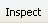

This page describes how to inspect the HTML elements of a web page using the Firebug extension for Firefox.
Introduction
Use the Inspection feature of Firebug to examine the live HTML source of any object on a web page. For pages with dynamic content, you can view changes to the HTML source in real time.
Instructions
To inspect the HTML elements of a web page in Firebug:
- In the lower right corner of Firefox, click the Firebug button
 to start Firebug.
to start Firebug. - Click the tab to view the HTML for the page.
- Click the  button to turn on code inspection on hover.
- Move your cursor around the HTML page. As you hover over an object, Firebug highlights the HTML code for that object in the HTML tab. (See screen capture below.)
- You can also inspect the CSS styles, CSS box layout, and DOM elements of a page, by clicking the Style, Layout, or DOM tabs on the right pane of Firebug.
- The Style tab displays the CSS styles that are currently applied to the selected HTML element. These styles update dynamically as the element is updated.
- The Layout tab helps you understand the CSS box model for the selected element. It displays the size (in pixels), padding, border, margin, and offset of the element.
- The DOM tab displays DOM information for the selected node. Click on a Node in the HTML tab to display its DOM information.
{kind=link}
{kind=link}
{kind=link}